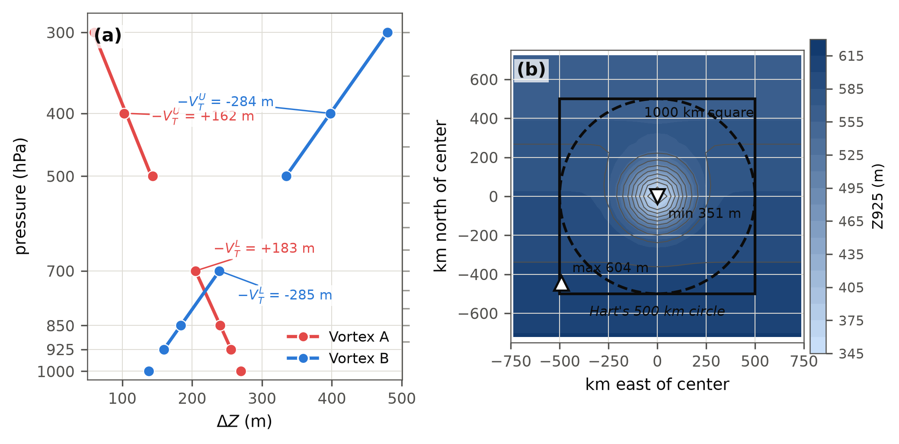
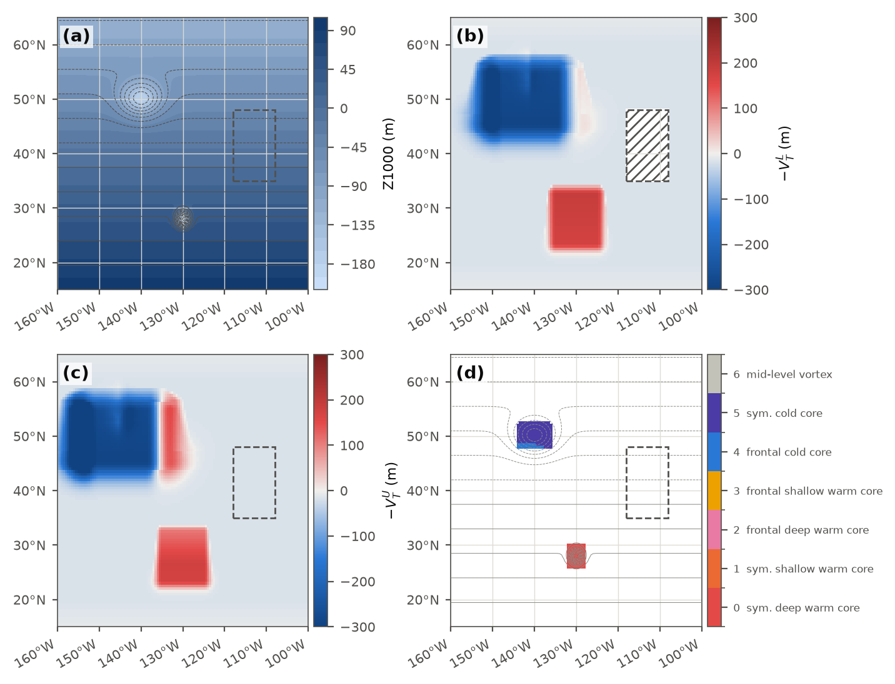
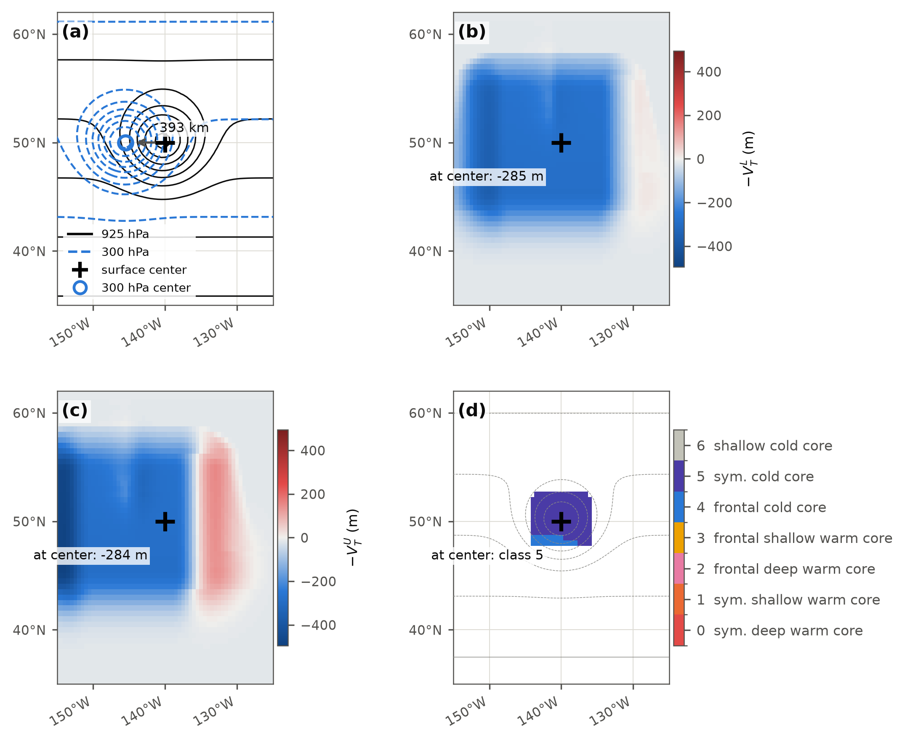
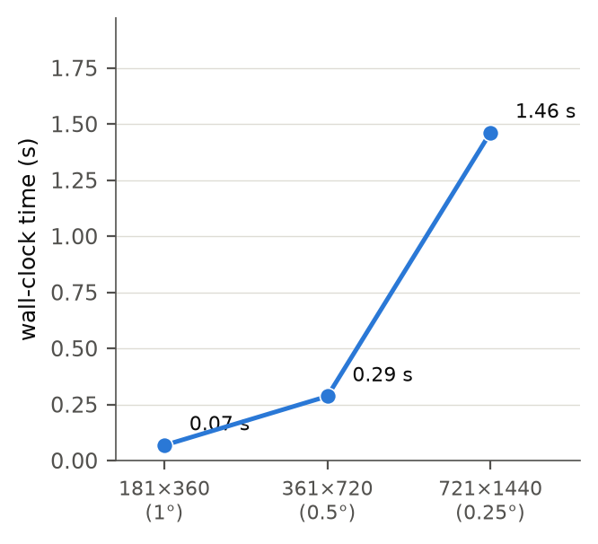
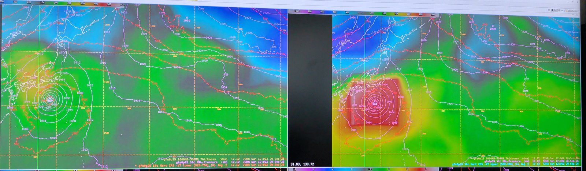

Gridded Cyclone Phase Space as an AWIPS Derived Parameter for Diagnosing Tropical Cyclone Structure and Extratropical Transition
Abstract
The cyclone phase space of Hart (2003) characterizes a cyclone's thermal structure through the lower- and upper-tropospheric thermal wind, derived from the vertical change of the geopotential height perturbation within 500 km of the storm center, together with a measure of low-level thermal asymmetry. Evans and Hart (2003) showed that the defined objective onset and completion times for extratropical transition (ET) from these parameters, onset when the asymmetry exceeds 10 m and completion when the lower-tropospheric thermal wind turns negative, and Hart et al. (2006) linked the post-transition trajectory to whether a system re-intensifies as a warm-seclusion cyclone of the type described by Shapiro and Keyser (1990). Operational access to these diagnostics has been limited to static, storm-centered plots produced externally for tracked tropical cyclones, which excludes the hybrid, post-tropical, and non-tropical systems of greatest concern to marine forecast offices. This work reformulates the thermal wind parameters as gridded fields computed on demand inside the AWIPS II display system as derived parameters, requiring only geopotential height on standard isobaric levels and surface pressure, and therefore available for every model in the local inventory without a cyclone tracker. At each grid point the height perturbation amplitude is evaluated over a 500 km window using a separable sliding-extrema filter, the thermal wind is obtained by regression against log pressure over 925 to 700 hPa and 500 to 300 hPa, terrain is handled by excluding below-ground levels, and a closed-low detector on 1000 hPa height restricts classification to closed cyclones at least 5 hPa deep. A categorical structure field (deep warm, shallow warm, neutral, cold core) and a continuous index summarize the two terms. Computation on a global 0.25 degree grid takes one to two seconds per forecast hour. An initial evaluation on GFS forecasts found values for a mature typhoon comparable in magnitude to those Hart reported for hurricanes, allowing for the different layer definitions, a correct cold-core classification of a deep North Atlantic cyclone, and a forecast hour for the loss of Typhoon Dujuan's deep warm core (the transition from deep to shallow warm core) that matched the storm-centered diagnosis on the Florida State University cyclone phase page for the same model run. The asymmetry parameter B is implemented as a first-order approximation, the window-mean thickness gradient projected across a steering-flow motion proxy, giving an Evans and Hart onset field that has not yet been validated. A simpler formulation based on vertical differences of relative vorticity was found to misclassify vertically tilted and broad baroclinic systems as warm core and was retained only for comparison. Limitations include the use of standard levels in place of Hart's 50 hPa spacing, the steering-flow approximation of the asymmetry parameter, and validation on a small number of cases; a full season of operational use at the Ocean Prediction Center is planned.
1. Background
Cyclone phase space (CPS) describes a cyclone's thermal structure from the geopotential height field alone, with no appeal to satellite presentation or a forecaster's eye [1]. Three numbers, each computed here as a gridded field (Section 2), locate a storm in the space: B, the left–right asymmetry of low-level thickness across the storm's track, and the lower- and upper-tropospheric thermal wind parameters −VTL and −VTU, which are positive for a warm (tropical-like) core and negative for a cold (baroclinic) one. Structure matters to marine forecasting because it anticipates two behaviors a track and intensity forecast alone do not: a storm undergoing extratropical transition (ET) typically expands its wind field well beyond the radius it carried as a tropical cyclone, and a storm that instead completes ET into a warm-seclusion cyclone — the frontal-fracture structure described by Shapiro and Keyser (1990) [4] — can re-intensify to hurricane-force winds far outside the tropics [3]. Evans and Hart (2003) defined objective ET onset as the hour B exceeds 10 m and completion as the hour −VTL turns negative [2]; the loss of the upper warm core, −VTU turning negative, typically falls between the two, and Jones et al. (2003) catalogued the forecast challenges ET poses more broadly [5]. Until now, operational access to these parameters has meant a static, storm-centered plot produced externally for a tracked tropical cyclone — leaving exactly the hybrid, post-tropical, and non-tropical systems a marine forecaster most needs help with off the page entirely, because no tracker follows them.
![Two-panel schematic of Hart's cyclone phase space diagrams sharing one 168-hour extratropical transition trajectory colored from light to dark blue by forecast hour. Left: parameter B against the lower thermal wind, the four asymmetry and warm/cold quadrants shaded and labeled, the trajectory crossing the B equals 10 meter onset line and then the negative lower thermal wind equals zero completion line, both crossings marked with an x, and a dashed branch toward a warm seclusion point in the symmetric warm core quadrant. Right: lower against upper thermal wind, the four structural quadrants shaded and labeled exactly as in the original single-panel version of this figure, the same trajectory and warm seclusion branch.](figures/fig10_two_diagrams.png)
![Three-panel figure illustrating the thermal wind concept. Left and center: vertical cross-sections with pressure on a logarithmic axis from 1000 to 300 hectopascals, showing seven flat reference lines each with a height-perturbation curve dipping toward the bottom of the panel over the storm center, shaded light red for a warm core whose dip shrinks with height and light blue for a cold core whose dip grows with height, with the 500 kilometer circle marked by dashed vertical lines and the height range at 925 and 500 hectopascals labeled with double arrows. Right: height range plotted against pressure on the same logarithmic axis for both cores, with least-squares fit lines and slope values for a shaded lower band and a shaded upper band.](figures/fig8_thermal_wind_concept.png)
cps.hart, the storm-centered reference implementation
(Section 7), rather than the operational HartCPS.py every
other figure in this article uses. At each pressure p the
height perturbation is a Gaussian depression of 150 km e-folding
radius, amplitude A(p) linear in ln(p) from
(a) 250 m at 1000 hPa to 20 m at
300 hPa (warm core) and (b) 100 m at
1000 hPa to 450 m at 300 hPa (cold core). Each of the
seven standard levels is drawn as a flat reference line with its own
perturbation curve, converted to a vertical offset at one fixed scale
for both panels, 9620 m per natural-log-pressure axis unit
(chosen so 250 m, panel a's largest amplitude, draws as about one
third of the 1000–925 hPa tick spacing), filled light red or
light blue. Dashed lines mark the 500 km circle; the labeled
double arrows give the height range (max minus min) inside that
circle at 925 and 500 hPa — 235 and 118 m for the warm
core, 123 and 301 m for the cold core. (c) That
same range plotted against ln(p) for both cores (markers at the
seven standard levels), from cps.hart.thermal_wind run on
a 2D grid (tests/cps/synthetic.py's make_grid/
warm_core_heights, centered 30°N 0°E, 0.5°
spacing, the same 150 km scale) built at Hart's own 50 hPa
levels so the fit is real. The shaded "lower band" (900–600 hPa)
and "upper band" (600–300 hPa) are cps.hart's
own bands — Hart's original 50 hPa spacing, not the
standard-level approximation (925/850/700 and 500/400/300 hPa)
the operational package in Section 2 uses. Because both cores'
amplitudes are one single line in ln(p) over the whole
1000–300 hPa depth, the lower- and upper-band slopes come
out identical for each core: −VTL =
−VTU = +191 m for the warm core,
−291 m for the cold core.![Two-panel plan-view figure illustrating parameter B. Left: a warm-core vortex at the origin of a 1200 kilometer square, its thickness contours closing symmetrically around the center, a 500 kilometer dashed circle split by a northeast-pointing motion arrow into left and right halves shaded two neutral tints, and B annotated as near zero. Right: the same vortex on a north-south thickness gradient with the warm flank labeled to the south and the cold flank to the north, the same circle, motion arrow and split, and B annotated as positive and above the 10 meter line.](figures/fig9_b_concept.png)
cps.hart.parameter_b over the 500 km circle for
a storm heading 45° (northeast), on a grid centered 30°N 0°E
(tests/cps/synthetic.py's make_grid).
(a) A warm-core vortex alone (a 60 m 925–700 hPa
thickness anomaly, 150 km scale) on a flat 2480 m thickness
background: the thickness contours (every 10 m) close
symmetrically around the center, the circle's motion-relative left
and right halves (shaded two neutral tints, carrying no warm/cold
meaning here) average out, and B = −0.1 m, near
Hart's zero. (b) The same vortex superimposed on a
40 m per 1000 km north–south thickness gradient (warm
to the south): for northeast motion, parameter_b's own
heading convention makes the right half of the circle the south/east
half, which now averages warmer (thicker) than the left, and B
= +11.7 m, above the 10 m onset threshold Evans and Hart
(2003) use for extratropical transition (Section 1).2. Method
At each pressure level p, the height perturbation amplitude is the spread of geopotential height over an analysis window W:
ΔZ(p) = maxW Z − minW Z
Hart's original window is a 500 km circle around the storm's own, moving analysis center; a gridded derived parameter has no such center, so this module re-centers the same window on every grid point instead, using a 500 km half-width square rather than a circle because a square sliding max/min along grid axes runs in O(N log w) per level (Section 4), while a pointwise circular window over a whole grid cannot. The square's corners reach 707 km, about 41% farther than Hart's circle, but for an isolated, roughly axisymmetric vortex this changes little; agreement with the circular point implementation is within 2% on an isolated synthetic vortex. On a background height gradient the square sees a larger range than the circle, by up to 41% of the gradient's contribution, and since that contribution grows with height in a baroclinic environment the square window carries a small cold bias relative to Hart's circle. Figure 2b shows the effect: the window maximum sits at a corner. The thermal wind for a layer is the least-squares slope of ΔZ against ln(p) over that layer's levels:
−VT = ∂(ΔZ) / ∂(ln p)
positive when ΔZ shrinks with height (warm core), negative when
it grows (cold core). Hart's own bands are 900–600 and
600–300 hPa at 50 hPa spacing, carried only by the GFS in this
D2D inventory; this package instead uses the universal standard levels
925/850/700 hPa (lower) and 500/400/300 hPa (upper), leaving
700–500 hPa deliberately unassigned rather than biasing one
band's slope with a layer that straddles Hart's true 600 hPa
boundary. A level is blanked below ground before any window filter
runs, when psfc < min(p, 900 hPa), a cap that keeps a
legitimately deep open-ocean low from being mistaken for terrain.
Classification is further restricted to real closed lows: a 1000 hPa
height minimum is a candidate center within 5 m of the minimum over
its own 300 km neighborhood, and counts only if the 300–500 km
annulus around it averages at least 40 m (about 5 hPa) higher —
two tests a uniform baroclinic slope cannot pass at once. The category
and continuous index follow directly:
| Code | Category | Condition |
|---|---|---|
| 4 | deep warm core | −VTL > band and −VTU > band |
| 3 | shallow warm core | −VTL > band and −VTU ≤ band |
| 2 | neutral | |−VTL| ≤ band and −VTU ≥ −band |
| 1 | cold core | |−VTL| ≤ band and −VTU < −band, or −VTL < −band and −VTU ≤ band |
| 0 | mid-level vortex | −VTL < −band and −VTU > band |
and the continuous index folds both terms into one number from −3 to +3:
index = 2 tanh(−VTL / 100) + tanh(−VTU / 100)
Parameter B and the ET stage
Hart's third number is a left–right asymmetry, not a vertical one. Over the same 500 km circle −VTL and −VTU use, split into a right half and a left half relative to the storm's own direction of motion:
B = h (ZR − ZL)
where ZR and ZL are the mean 900 to 600 hPa thickness over the right and left halves and h is +1 in the Northern Hemisphere and −1 in the Southern, so that warm/thick air on the storm's equatorward flank always reads positive. Evans and Hart (2003) took 10 m as the threshold separating a symmetric, tropical-like thickness field from an asymmetric, frontal one. A single grid point has no "left half" of anything, so this package instead uses a gridded approximation:
B = h (8R / 3π) (nR · ⟨∇Zthk⟩W) λ
with nR the right-hand unit normal of the steering flow (the mean 850 to 300 hPa wind, the motion proxy used in place of a storm's own track), the angle brackets a window-mean over the same 500 km radius R, and λ the layer-scaling factor below. This rests on an identity for a linear field: the right-minus-left half-disk mean difference equals the projected gradient times 8R/3π exactly, and the module's implementation of it was checked against the storm-centered half-disk calculation to within 0.05% on a synthetic linear field. The 925 to 700 hPa layer this package uses elsewhere is not Hart's 900 to 600 hPa layer, so the result is rescaled by
λ = ln(900/600) / ln(925/700) = 1.455
What this loses: a genuinely nonlinear thickness structure inside the window — most notably a warm-seclusion tongue folding back into one side of the circle — is only captured to first order, and a stationary or steering-opposed system has no well-defined motion to split left from right, so B is blanked rather than guessed.
Evans and Hart (2003) turned B and −VTL into three life-cycle stages:
| Code | Stage | Condition |
|---|---|---|
| 0 | pre-onset | B ≤ 10 m |
| 1 | onset | B > 10 m and −VTL ≥ 0 |
| 2 | complete | −VTL < 0 |
The stage field keeps no memory of an earlier frame: it looks only at the current B and −VTL, so a storm that re-forms a low-level warm core after transitioning — a warm seclusion — drops back to stage 0 or 1 rather than staying at 2. That drop is the warm-seclusion signature, not a sign the transition never completed, and is best read together with the category field at the same point and time.
![Four-panel synthetic figure demonstrating parameter B. Top left: 925-700 hPa thickness contoured with steering-flow arrows and two identical warm-core vortex centers marked, one sitting in easterly steering, one in westerly steering. Top right: the gridded parameter B field, sharply split between a negative south half and a positive north half, with the B equals 10 meter contour drawn near the transition and labeled near the domain's west edge. Bottom left: the ET stage field, the westerly vortex showing a small onset ring and the easterly vortex an otherwise pre-onset blob, with no complete (stage 2) pixels at either. Bottom right: Hart's Phase 1 diagram of B against negative lower thermal wind, with the four structural quadrants shaded, a schematic 168 hour transition trajectory, the onset and completion crossings annotated, and the two synthetic vortices plotted as diamonds at their actual computed values.](figures/fig7_parameter_b.png)
HartCPS.ORIENTATION_MODE was set to 0
for this synthetic grid, rows increasing northward, the same
convention Figure 4 sets for CycloneCore.
(a) The thickness field and steering arrows.
(b) HartCPS.executeB: the vortex in
westerlies (42°N) reads B = +25 m, comfortably above the
10 m onset threshold, because moving east its right side faces the
warm south; the vortex in easterlies (28°N) reads B =
−25 m, because moving west its right side faces the cold
north — the same warm-core vortex, the same amplitude, opposite
B purely from the environment and the motion.
(c) HartCPS.executeETStage: both cores
keep a clearly positive lower thermal wind (about +119 m at each
center), so the westerly vortex reads onset (stage 1) throughout its
footprint while the easterly one reads pre-onset (stage 0) almost
everywhere in its own (a sliver at its poleward edge, closest to the
steering reversal, already nears the onset line); neither shows a
single complete (stage 2) pixel.
(d) The two vortices
plotted on Hart's own axes at their actual computed
(B, −VTL) values, alongside a
schematic transition trajectory shaped like Figure 1's own but
redrawn on B instead of −VTU —
Figure 1a now shows that same B–−VTL
pairing directly, on its own (different) schematic trajectory.
HartCPS.delta_z; solid lines are the least-squares fits
HartCPS.band_slope returns for the lower (925–700 hPa)
and upper (500–300 hPa) bands, annotated with the resulting
−VT in meters. Faint ticks on the right axis mark Hart's
original 50 hPa levels, which the seven standard levels on the left
axis only sparsely sample. (b) 925 hPa height of
vortex A alone (vortex B omitted), contoured and filled, with the
1000 km square analysis window this package actually uses and Hart's
500 km circle both drawn around the center; the labeled max and min
are the two values the window's ΔZ at 925 hPa is built
from. The maximum sits at a corner of the square because of the
background height gradient, which is the square-versus-circle
difference discussed in the text.
executeBand3, 925/850/700 hPa)
and (c) HVTU (500/400/300 hPa), sharing one
−300 to +300 m color range; away from either vortex both read
near neutral (ambient about −17 m, inside the colormap's
gray band) because the synthetic background gradient grows only
modestly with height; on a real baroclinic zone the ambient values
are larger, which is why the class and index products are
restricted to detected closed lows.
Terrain is hatched (NaN, below-ground). (d) HCPScat
(executeClassStd), the five-category field, with 1000 hPa
height contoured thin gray for reference.3. Why not vorticity
A cheaper pointwise proxy for the same idea is the vertical change of relative vorticity, ζlo − ζhi, smoothed: a cyclonic circulation that weakens with height (the tropical structure) reads positive, one that holds up or strengthens aloft reads negative, and the sign convention was chosen to match Hart's. It is inexpensive and matches a forecaster's existing habit of reading vorticity, but it has three biases the Hart family does not. Tilt reads as warm: a baroclinic low's upper trough sits displaced from its surface center, so the vertical vorticity difference is near zero or positive directly above the surface low and the cold signal instead forms a ring or lobe off to one side — a dipole, not the cold core the Hart family reports at the same point. Broad upper features have small vorticity for their height perturbation, understating upper cold cores. Mask selection compounds both: the vortex mask is itself built from 850 hPa vorticity, which favors positive lower differences by construction. Figure 4 demonstrates the tilt bias directly.

CycloneCore.execute lower term (850–600 hPa
geostrophic-wind vorticity difference) and (b) upper
term (600–300 hPa): both read near zero or positive at the
surface center itself, with the cold signal displaced west into a
clear dipole — CycloneCore.ORIENTATION_MODE is set to 0
in the figure script because this synthetic grid's rows increase
northward, unlike the AWIPS site convention (mode 1) the module
defaults to. (c) HVTL and (d) HVTU (same
executeBand3 definitions as Figure 3): both read clearly
negative directly at the surface center, with no dipole. The 400 km
tilt already produced this dipole on the first attempt; the figure
script's fallback to a 600 km tilt, kept for robustness, was not
needed.4. Implementation
Both families are plain, self-contained AWIPS II D2D derived
parameters, run inside CAVE's embedded Python interpreter on demand,
per frame, from grids already in the local inventory — no server, no
cron, no external tracker. The Hart family needs geopotential height on
the seven standard isobaric levels and surface pressure for
−VTL/−VTU/HCPScat/HCPSidx;
parameter B and the ET stage additionally need wind components at four
levels (850, 700, 500, 300 hPa) for the steering-flow motion proxy
and the coriolis pseudo-field for the hemisphere sign. The vorticity
family needs wind components at three levels. The sliding
window that ΔZ is built from runs in O(N log w) per level
via a doubling/sparse-table extremum filter rather than a naive
per-pixel scan, which is what keeps a full six-level classification
affordable on a global grid (Figure 5). The installed footprint is
eleven XML derived-parameter definitions (HVTL, HVTU, HCPScat, HCPSidx,
HB, HETstage, VTL, VTU, CPScat, CPSidx, cpsZ850), two Python files
(HartCPS.py, CycloneCore.py), and three
colormaps (a diverging one for the thermal wind and B fields, a
categorical one for the class field, and a second categorical one for
the ET stage field). executeETStage layers parameter B's
window-mean gradient pass and the steering-flow average on top of the
same thermal-wind computation and takes about 2 s on the same
0.25° grid.

HartCPS.executeClassStd on random smooth fields
(not the vortex fields used elsewhere; timing only), median of 3 runs
at each of three global grid resolutions (1°, 0.5°, 0.25°), measured
on the machine that built this page. The 0.25° result is consistent
with the roughly one-second-per-frame budget the package targets for
a full global classification.5. Results
Validation to date is a small log of real GFS cases sampled at the MSLP center, not a season-scale study. A mature typhoon at 984 mb (GFS 12Z, 72 h) read HVTL = 120 m, HVTU = 180 m, HCPScat = 4 (deep warm core), HCPSidx = 2.5, comparable in magnitude to the values Hart (2003) reported for hurricanes, allowing for the different layer definitions. For Typhoon Dujuan, the first forecast hour at which HCPScat dropped below 4 in a GFS run (Monday, 21 September 2026, 18Z) matched the hour the Florida State University cyclone phase page showed the same run moving from deep to shallow warm core. That hour is the loss of the upper warm core, a sign that transition is under way, and not the Evans and Hart onset, which depends on B and is computed separately (Section 2) but not yet validated. A deep extratropical low over the North Atlantic classified HCPScat = 1 (cold core), with both HVTL and HVTU negative, in the same GFS cycle. After the below-ground mask is applied, Greenland and the high terrain of western North America show no classification at all, rather than a contaminated one built from extrapolated sub-surface heights — the intended behavior, not a gap.

6. Limitations and future work
- Square analysis footprint on the raw HVTL/HVTU fields (a cosmetic consequence of the fast sliding-window algorithm, not the class or index products, which are masked to detected lows).
- Standard levels (925/850/700, 500/400/300 hPa) in place of
Hart's 50 hPa-spaced 900–600/600–300 hPa bands; a GFS-only
exact-band definition (
executeBand7) exists but is not yet wired into an XML definition. - Parameter B is computed only to first order: the window-mean thickness gradient across a steering-flow motion proxy (the mean 850 to 300 hPa wind), scaled from the 925 to 700 hPa layer to Hart's 900 to 600 hPa equivalent. It misses nonlinear thickness structure inside the window and is unreliable for stationary or steering-opposed systems. The resulting Evans and Hart onset field awaits validation.
- Validation is a handful of real cases, not a season.
- No sensitivity analysis yet: the response to window size, band definition, grid resolution, and the 25 m neutral band has not been quantified.
- The below-ground rule treats the 1000 and 925 hPa surfaces as valid wherever the surface pressure exceeds 900 hPa, so extrapolated heights over low terrain (surface pressure between 900 and 1000 hPa) still enter the window.
- The continuous index's weighting (twice the lower term) is a display heuristic with no physical derivation; the category field is the product to reason from.
- A storm-centered trajectory product — the classic phase-space diagram, sampled along a TCM track — is planned via a GFE procedure.
- A model-comparison study of ET timing across the local model inventory, now that every model can be classified without a tracker, is a natural next step.
7. Availability
The package lives at D2D/ in the repository linked at the
top of this page: derived-parameter Python and XML under
derivedParameters/, colormaps under colormaps/Grid/,
the storm-centered reference implementation at cps/hart.py,
and the technical, user, and installation guides under
D2D/docs/ and D2D/README.md. The test suite
(tests/cps and tests/d2d_cps, run with
python3 -m pytest tests -q) currently counts 81 tests,
every expected value analytic or from an independent brute-force
comparison. No license is specified.
References
- Hart, R. E., 2003: A cyclone phase space derived from thermal wind and thermal asymmetry. Mon. Wea. Rev., 131, 585–616.
- Evans, J. L., and R. E. Hart, 2003: Objective indicators of the life cycle evolution of extratropical transition for Atlantic tropical cyclones. Mon. Wea. Rev., 131, 909–925.
- Hart, R. E., J. L. Evans, and C. Evans, 2006: Synoptic composites of the extratropical transition life cycle of North Atlantic tropical cyclones: Factors determining posttransition evolution. Mon. Wea. Rev., 134, 553–578.
- Shapiro, M. A., and D. Keyser, 1990: Fronts, jet streams and the tropopause. Extratropical Cyclones: The Erik Palmén Memorial Volume, C. W. Newton and E. O. Holopainen, Eds., Amer. Meteor. Soc., 167–191.
- Jones, S. C., and Coauthors, 2003: The extratropical transition of tropical cyclones: Forecast challenges, current understanding, and future directions. Wea. Forecasting, 18, 1052–1092.